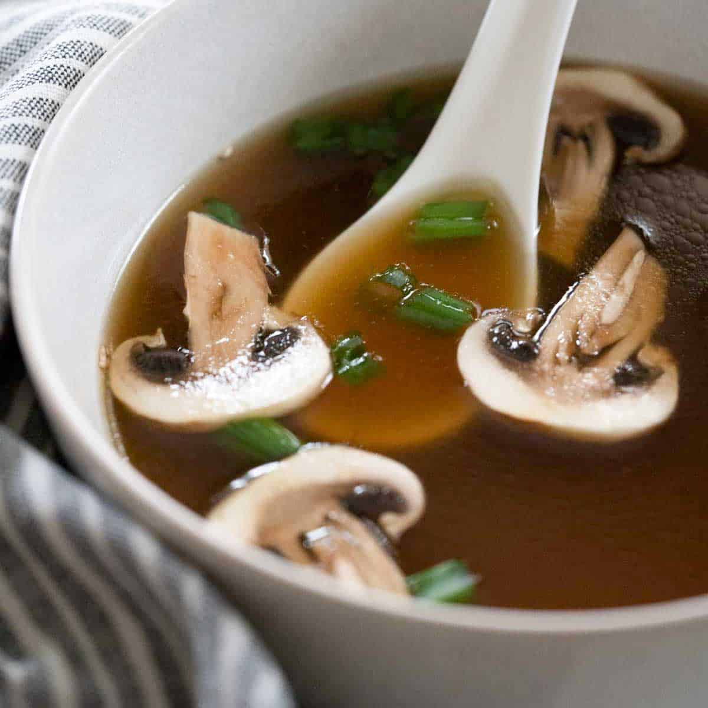

Japanese Onion Soup

Description
The basic Japanese soup that's given out as an appetizer at most Japanese restaurants.
Very mild, a bit salty, and a touch of tang.
It's a very improvisable recipe; most of the ingredients' quantities can be changed according to taste.
Use your favorite mushrooms in this recipe.
Ingredients
- ½ stalk celery, chopped
- 1 small onion, chopped
- ½ carrot, chopped
- 1 teaspoon grated fresh ginger root
- ¼ teaspoon minced fresh garlic
- 2 tablespoons chicken stock
- 3 teaspoons beef bouillon granules
- 1 cup chopped fresh shiitake mushrooms
- 2 quarts water
- 1 cup baby portobello mushrooms, sliced
- 1 tablespoon minced fresh chives
-
In a large saucepan or stockpot, combine the celery, onion, carrot, ginger, garlic, and a few of the mushrooms.
Add chicken stock, beef bouillon, and water.
Place the pot over high heat, and bring to a rolling boil.
When the mixture reaches boiling, cover, reduce heat to medium,
and cook for 45 minutes.
-
Place all of the remaining mushrooms into a separate pot.
When the boiling mixture is done, place a strainer over the pot with the mushrooms in it.
Strain the cooked soup into the pot with the mushrooms.
Discard strained materials.
-
Serve the broth with mushrooms in small porcelain bowls,
and sprinkle fresh chives over the top.
Use Asian soup spoons for an elegant effect.